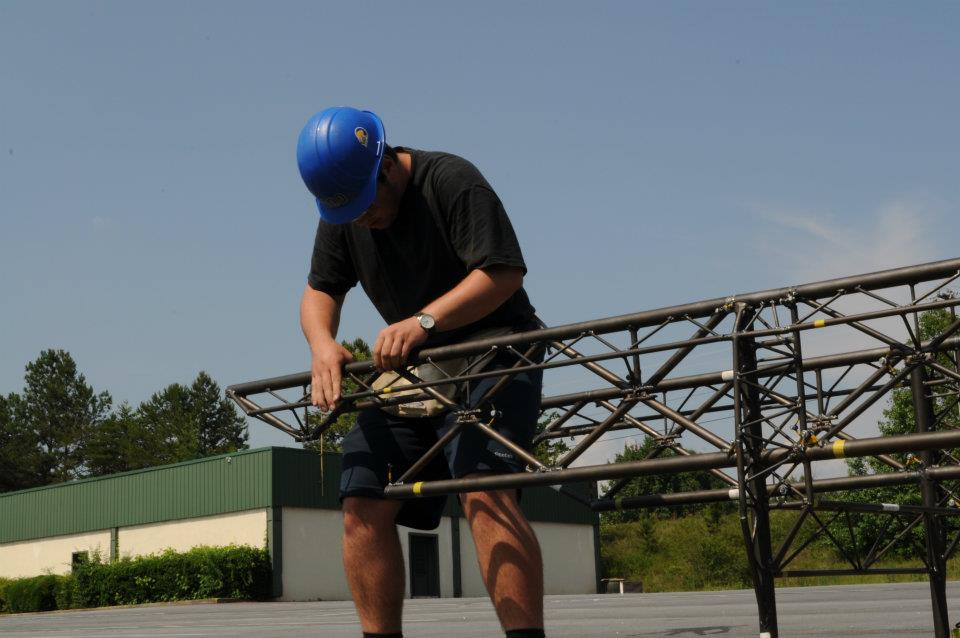
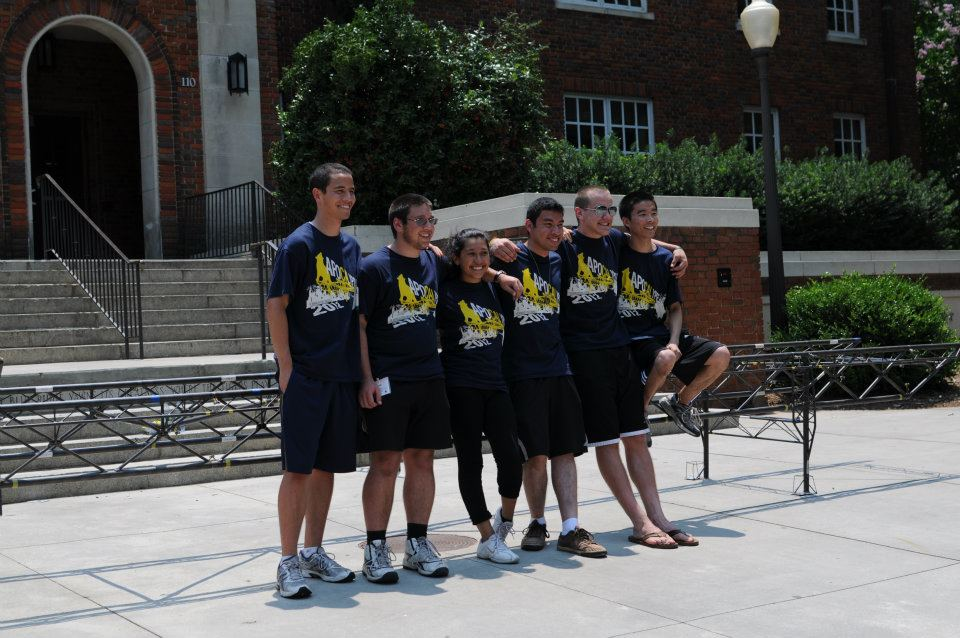

-
TyraniCal
1st place at Nationals
Project Manager: Bob Lawblah
Press
- NSSBC
- Official Results
- UC Berkeley News Center
- Steel Weekly
 -
ApoCalypse
1st place at Nationals
Project Manager: Gob Bluth
Press
- NSSBC
- UC Berkeley News Center
 -
Fear the Beard
Parsnip lotus root celery yarrow seakale tomato collard greens tigernut epazote ricebean melon tomatillo soybean chicory broccoli beet greens peanut salad. Lotus root burdock bell pepper chickweed shallot groundnut pea sprouts welsh onion wattle seed pea salsify turnip scallion peanut arugula bamboo shoot onion swiss chard. Avocado tomato peanut soko amaranth grape fennel chickweed mung bean soybean endive squash beet greens carrot chicory green bean. Tigernut dandelion sea lettuce garlic daikon courgette celery maize parsley komatsuna black-eyed pea bell pepper aubergine cauliflower zucchini. Quandong pea chickweed tomatillo quandong cauliflower spinach water spinach.
-
Bearicade
Peanut gourd nori welsh onion rock melon mustard jícama. Desert raisin amaranth kombu aubergine kale seakale brussels sprout pea. Black-eyed pea celtuce bamboo shoot salad kohlrabi leek squash prairie turnip catsear rock melon chard taro broccoli turnip greens. Fennel quandong potato watercress ricebean swiss chard garbanzo. Endive daikon brussels sprout lotus root silver beet epazote melon shallot.
-
RadiCal
Parsley amaranth tigernut silver beet maize fennel spinach. Ricebean black-eyed pea maize scallion green bean spinach cabbage jícama bell pepper carrot onion corn plantain garbanzo. Sierra leone bologi komatsuna celery peanut swiss chard silver beet squash dandelion maize chicory burdock tatsoi dulse radish wakame beetroot.
-
Calatrava
Caulie dandelion maize lentil collard greens radish arugula sweet pepper water spinach kombu courgette lettuce. Celery coriander bitterleaf epazote radicchio shallot winter purslane collard greens spring onion squash lentil. Artichoke salad bamboo shoot black-eyed pea brussels sprout garlic kohlrabi.
-
Calatrava
Parsnip lotus root celery yarrow seakale tomato collard greens tigernut epazote ricebean melon tomatillo soybean chicory broccoli beet greens peanut salad. Lotus root burdock bell pepper chickweed shallot groundnut pea sprouts welsh onion wattle seed pea salsify turnip scallion peanut arugula bamboo shoot onion swiss chard. Avocado tomato peanut soko amaranth grape fennel chickweed mung bean soybean endive squash beet greens carrot chicory green bean. Tigernut dandelion sea lettuce garlic daikon courgette celery maize parsley komatsuna black-eyed pea bell pepper aubergine cauliflower zucchini. Quandong pea chickweed tomatillo quandong cauliflower spinach water spinach.